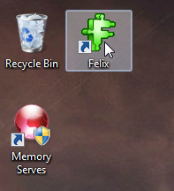
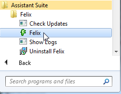
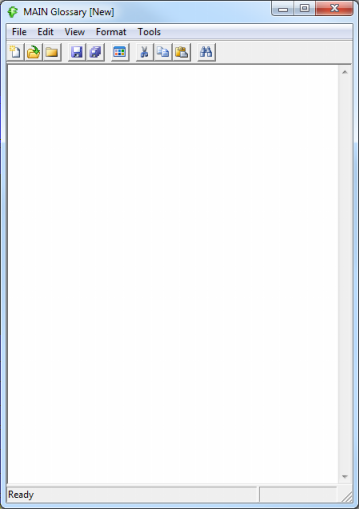
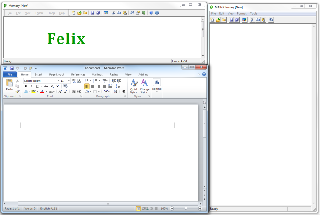
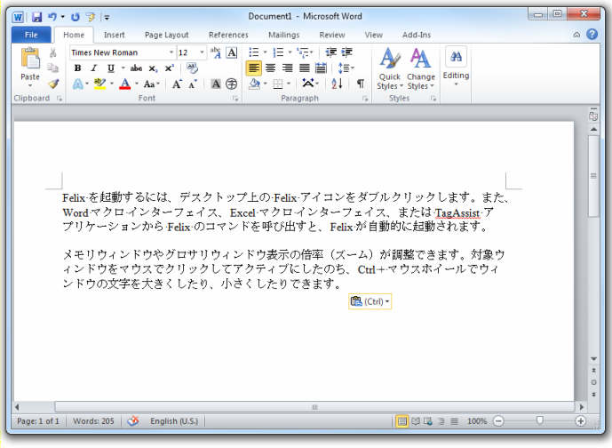
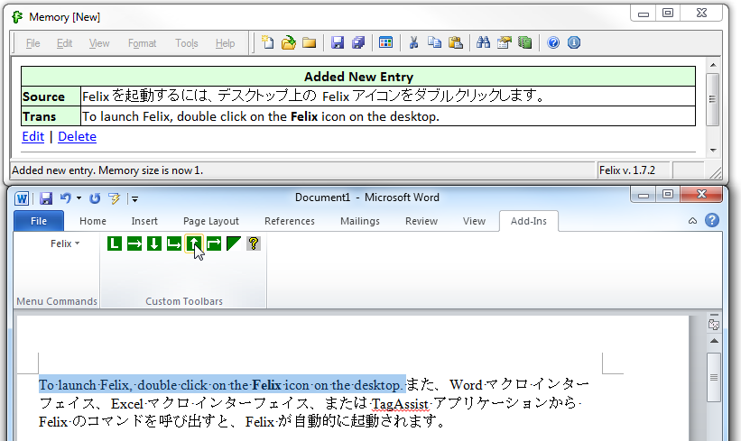
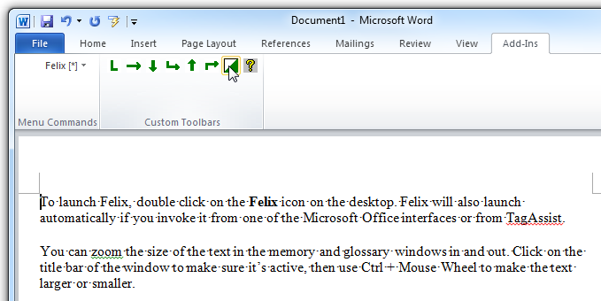
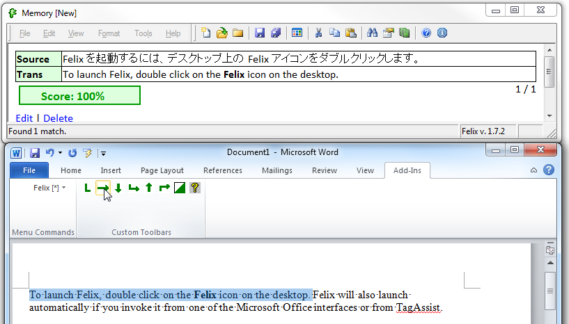

3. Using Felix for the First Time¶
If you are using Felix for the first time, it may be helpful to start with the Quick-start Tutorial Using MS Word or Quick-start Tutorial Using MS PowerPoint. You might also find it useful to watch the Demo Video.
3.1. Start Felix¶
If you installed Felix with the default options, there will be a Felix icon on your desktop. Double click this icon to start Felix.

You can also launch Felix from the Start menu. Click Start, then click All Programs, then Assistant Suite. Next, click Felix, and click on the Felix icon.

3.2. Arrange the Windows¶
With Felix, you translate by overwriting the source file with your translation. If you’re translating a Microsoft Word file, you’ll translate right from inside Microsoft Word.
So you’ll be working with three windows: the Felix memory window; the Felix glossary window; and whatever program you’re using to translate. This might be Microsoft Word, PowerPoint, or Excel, Tag Assist, or some other program.

The Felix window
This is the window where you will see your translation matches in the memory.

The Glossary window
This window will show you matches from your glossary.

Microsoft Word
Here is where you will actually translate your document.
For more information about the Felix memory and glossary windows, see Getting around in Felix
I generally like to arrange the windows with Felix on top, Word (or PowerPoint/Excel, etc.) underneath, and the glossary window to the side.

Arranging the Windows
If you have a second monitor, you could also put the Felix memory and glossary windows in one window, and the word-processing program in the other.
3.3. Translate a Document¶
Open the document to translate. Keep the windows arranged as shown above. Here, I’ll assume you’re using Word, but the process is similar for PowerPoint or Excel.

Open the document to translate
Place the cursor at the beginning of the first sentence, and click on the right arrow in the toolbar. If you can’t see the Felix toolbar, make sure that you’re on the Add-Ins tab.

Look up the first sentence in Felix
This looks up the first sentence, and shows it in the Felix memory window. Since you don’t have a translation memory or glossary at this point, you won’t see any matches. As you add translations to your memory and terms to your glossary, you’ll begin to see matches as you translate.

The first sentence is looked up in Felix
At this point, the sentence to translate should be selected in Word. Type in your translation, overwriting the source sentence.

The first sentence is translated in Word
When you’re done translating, the cursor should be at the end of the sentence. If it isn’t, put it there. Now, click on the up arrow in the toolbar. This will “register” your translation for the source segment in the translation memory. Now the next time you come across that sentence, or one similar to it, Felix will remember it and show you your translation.

The translation is registered in Felix
After you’ve registered your translation, click the right arrow again. This looks up the next sentence, displaying it the Felix memory window.

Look up the next sentence
Translate the sentence again, as before. Keep doing this until the entire document is translated.
Tip
See Translation Mode for details about the Felix commands available from Microsoft Word.
3.4. Review a Translation¶
After you’ve translated the entire document, it’s ready to deliver. There is no clean-up step required. If you want to review your translation, go into review mode by clicking the green/white triangles button (see Review Mode for details).

Review mode
As you can see in the figure, the colors of the toolbar buttons are inverted in review mode.
Next, put the cursor at the beginning of the document, and click the right arrow. This “looks up” your translation in Felix. You should see your translation together with the source sentence in Felix.

Reviewing in Felix
If you need to make any corrections, do so. Then put the cursor at the end of the sentence. Click on the up button, like you did to register the translation. This corrects the translation in your TM.
Make sure the cursor is at the end of the sentence, and then click the right arrow again. This “looks up” the next translation. Check it, and continue through the rest of the document.
Tip
If you don’t need to edit the translation, you can skip the “register” step. Just click the right arrow to review the next translation.
3.5. Next Steps¶
Congratulations! You’ve just translated your first document in Felix. After the excitement has died down a bit, you might want to take the grand tour of Felix, starting with Getting around in Felix.
If you’re interested in using Felix from Microsoft PowerPoint, check out Using Felix from PowerPoint, together with the Quick-start Tutorial Using MS PowerPoint.
If you want to use Felix from Microsoft Excel, check out Using Felix from Excel.